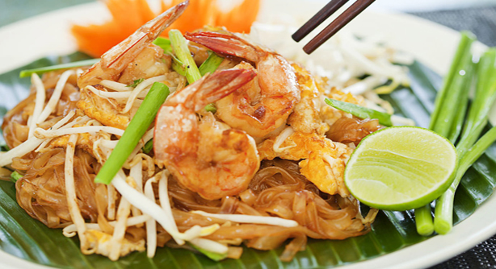

PAD THAI (ผัดไทยกุ้งสด)
Pad thai is a stir-fried rice noodle dish commonly served as street food in Thailand. It is made from soaked dried rice noodles, eggs, chopped tofu, tamarind pulp, dried shrimp, fish sauce, garlic, shallots, red chilli pepper, and palm sugar, often served with a lime wedge, and roasted peanuts. The addition of vegetables such as: bean sprouts, garlic chives, coriander leaves, pickled radishes, or turnips are also used in the dish, and may also include meats such as: crab, shrimp, squid, chicken or other proteins. Click HERE for more.